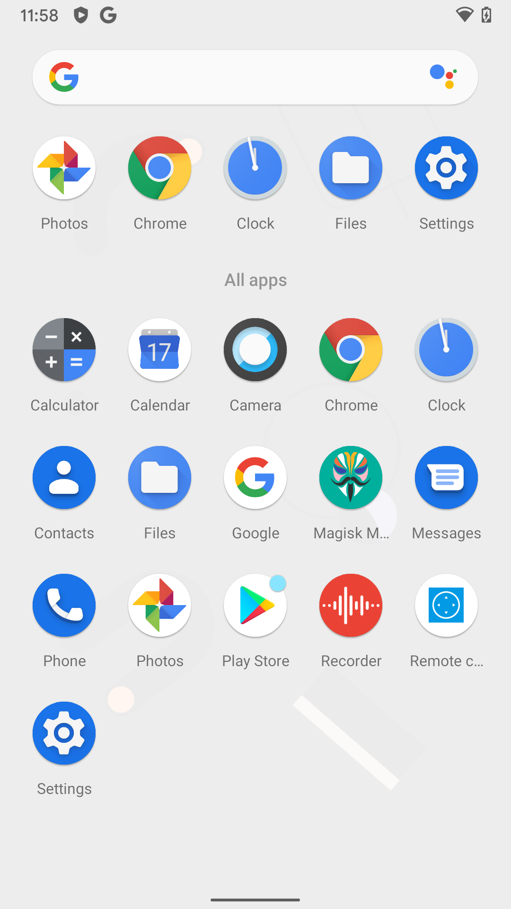
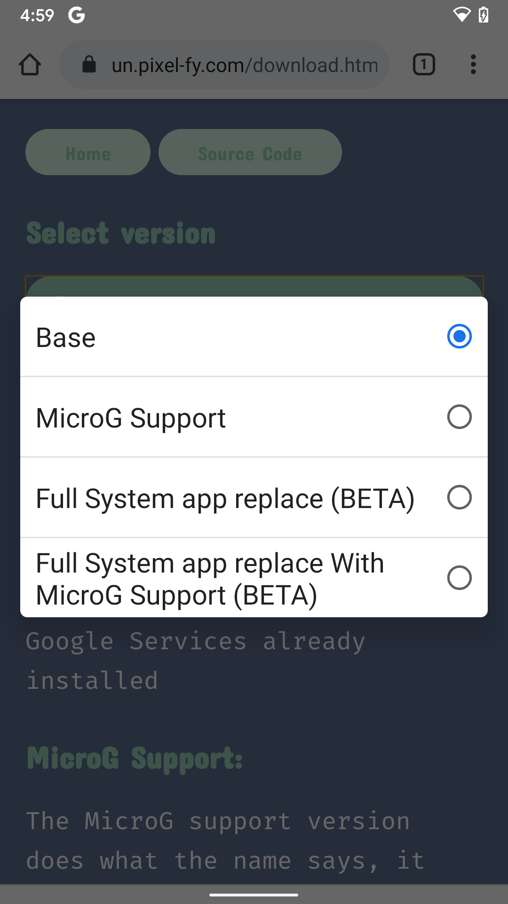
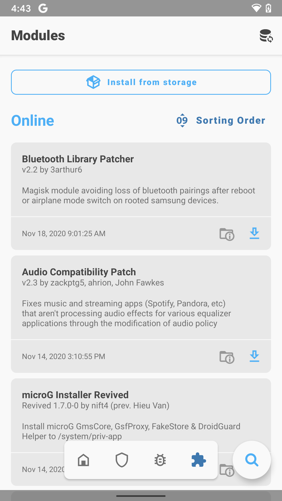
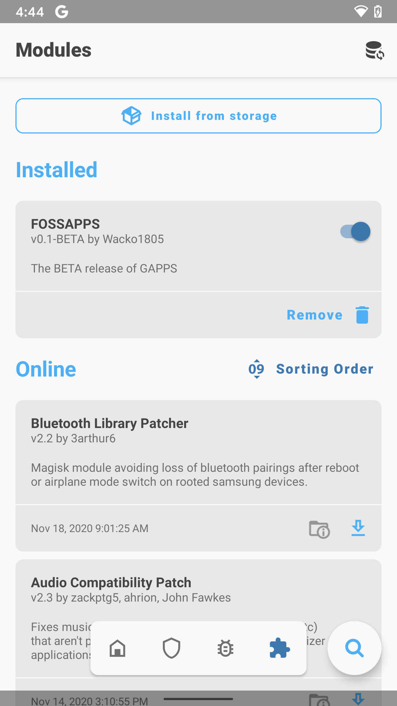

Before and after flashing FOSSAPPS

How to install FOSSAPPS
Head to the download page here, and download the version that you need, Or you can download directly from Github here.
Head into Magisk Manager and go to the "Modules" Tab. Select "Install from storage" And navigate to FOSSAPPS. Wait for the install to finish and reboot.
To uninstall, go into magisk manmager > modules. Select "remove" on FOSSAPPS, and reboot
